Experiments
Laboratory Experiments
We will now begin the PKI experiments, focusing on how a PKI hierarchy works, how the certificates in a chain are used to validate an end-entity certificate, how TLS and DTLS change their authentication processes when both devices use certificates issued by a CA, and what occurs when incorrect or invalid certificates are used.
PKI Hierarchy and Certificate Chain Validation
For this experiment, we will study how a PKI is organized, how that organization is used to issue certificates, and how this process forms a certificate chain that can be used to validate certificates presented for authentication.
As we can see from our topology, a PKI is a hierarchical structure. This hierarchy consists of a root CA, which acts as the trust anchor at the end of a certificate chain and signs the certificates used to authorize intermediate CAs. Any device that wants to use certificate-based authentication must have its own certificate and access to the necessary certificate chain leading back to a trusted root CA.
This certificate chain is an important feature of PKI because it allows the source of a certificate to be traced and its signatures to be checked against trusted CAs. After confirming that the chain is valid and anchored in a trusted root CA, the certificate can be used to authenticate the device and establish a secure connection.
We will now see this in practice by first verifying the chains of our TLS certificates and then performing a TLS connection to see how these chains are used during authentication.
First, we can use the following command to ensure that the TLSServer certificate has been issued correctly by a trusted CA:
openssl verify -CAfile /root/pki/tls-server/root-ca.crt -untrusted /root/pki/tls-server/int-ca1.crt /root/pki/tls-server/tls-server.crt
The response should be OK, confirming that the certificate chain validates against the configured Root CA.
We can perform the same verification for TLSClient:
openssl verify -CAfile /root/pki/tls-client/root-ca.crt -untrusted /root/pki/tls-client/int-ca1.crt /root/pki/tls-client/tls-client.crt
With both certificates successfully verified, we can now begin a TLS connection between these two devices and observe how TLS uses and validates the certificate chains.
On TLSServer, use the following command to start the server:
openssl s_server -accept 4433 -cert /root/pki/tls-server/tls-server.crt -key /root/pki/tls-server/tls-server.key -cert_chain /root/pki/tls-server/int-ca1.crt -CAfile /root/pki/tls-server/root-ca.crt -Verify 1 -verify_return_error
Then, on TLSClient, use the following command to connect:
openssl s_client -connect 10.0.7.2:4433 -CAfile /root/pki/tls-client/root-ca.crt -cert /root/pki/tls-client/tls-client.crt -key /root/pki/tls-client/tls-client.key -cert_chain /root/pki/tls-client/int-ca1.crt -verify_return_error
A TLS connection should be established, and we can scroll through the terminal output to examine the certificate-chain information and see how it is used during the handshake.
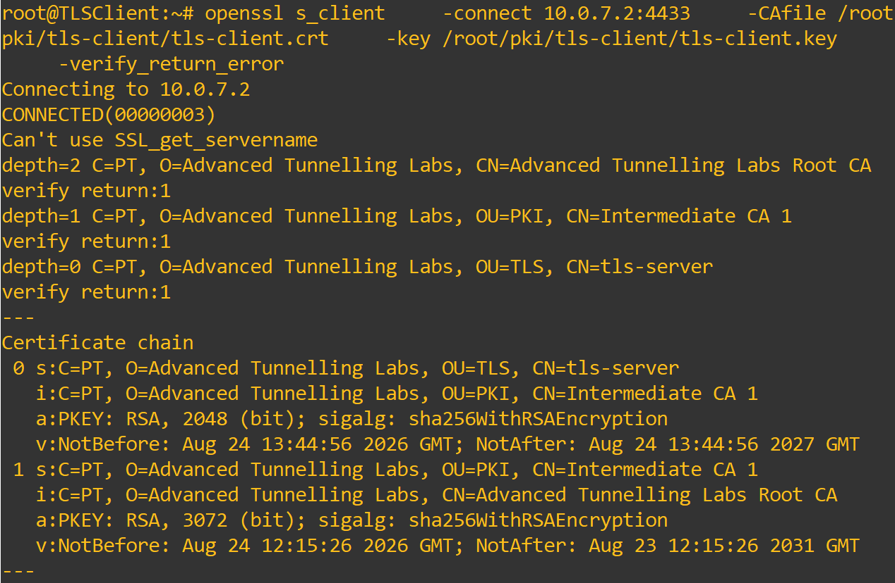
As we can see in Figure 1, when the client connects to the server and begins authentication, it receives the certificate chain associated with the server certificate.
The chain contains the end-entity certificate, the intermediate certificate that signed it, and the Root CA that ultimately signed the intermediate certificate and acts as the trust anchor. The root certificate is normally already available in the client's trusted certificate store rather than being transmitted by the server.
We can then see information regarding the certificates, such as their names, issuers, validity periods, signing algorithms, and public keys.
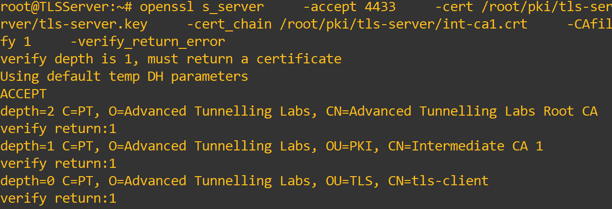
In Figure 2, we can see the certificate information from the server side. The main difference is the end-entity certificate, the client certificate is shown instead of the server certificate.
We can also see the certificate verification performed for the client certificate. This is an important part of mutual authentication because the server must verify that the client's certificate chains back to a trusted CA before accepting the client's identity.
Mutual Authentication in TLS/DTLS
For our next experiment, we will test the authentication used by TLS and DTLS, comparing server-only authentication with mutual authentication.
We will begin by analyzing how authentication works when only the server is authenticated in TLS. To do this, on TLSServer, use the command:
openssl s_server \
-accept 4433 \
-cert /root/pki/tls-server/tls-server.crt \
-key /root/pki/tls-server/tls-server.key \
-cert_chain /root/pki/tls-server/int-ca1.crt
Notice that this command is different because we are not using the parameters that request or verify a client certificate.
Then, connect to the server from TLSClient using:
As we can see in Figure 3, the client side has minimal to no changes. It still validates the server's certificate chain and then continues with the normal TLS handshake.
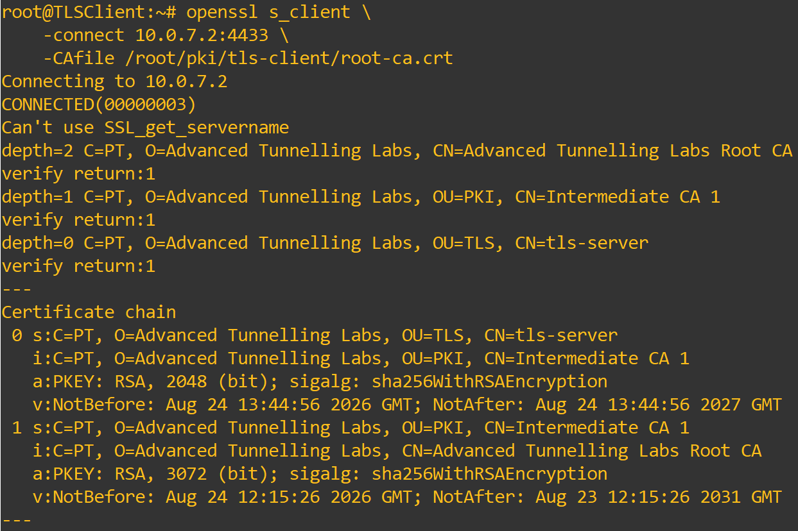
On the server side, however, no client certificate is requested or received. As a result, the server performs the normal handshake, negotiating algorithms and parameters and establishing the connection without authenticating the client's identity, as seen in Figure 4.
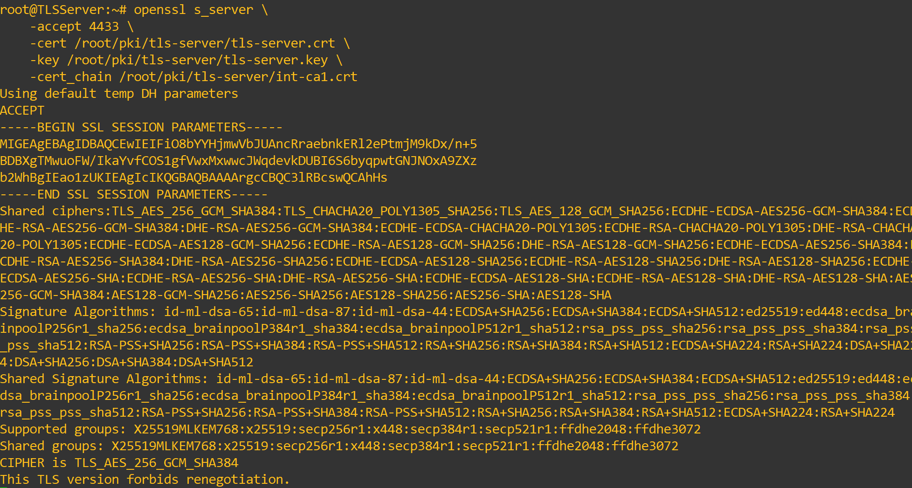
We will now examine the difference between mutual authentication and server-only authentication in DTLS.
Beginning with server-only authentication, we will use the following commands on DTLSServer:
openssl s_server \
-dtls1_2 \
-accept 4444 \
-cert /root/pki/dtls-server/dtls-server.crt \
-key /root/pki/dtls-server/dtls-server.key \
-cert_chain /root/pki/dtls-server/int-ca2.crt
We can now place a Wireshark probe between the DTLS devices to see which certificates are sent through the connection.
Then, connect the client, which will not send a certificate, using:
We can see the client output in Figure 5, which includes the certificate chain belonging to the server certificate. This means that the client has authenticated the server using its trusted Root CA.
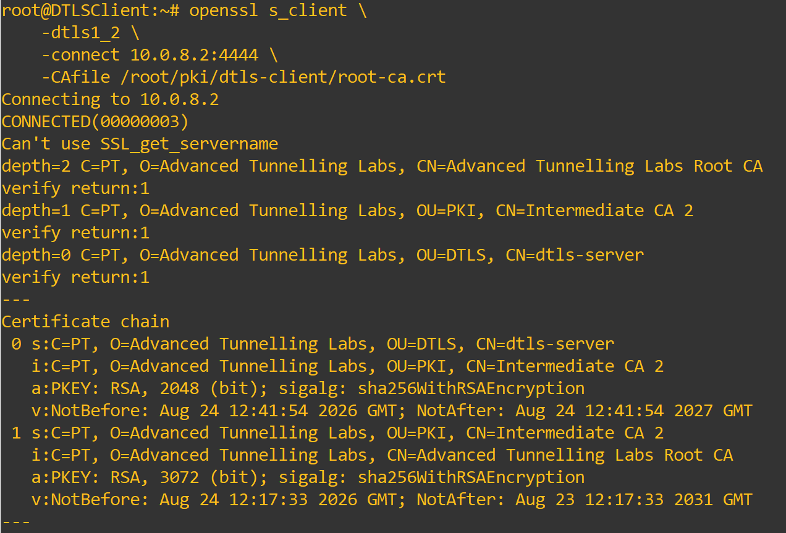
From the server output in Figure 6, we can see that no client certificate was received. Only the necessary parameters and algorithms were negotiated, with no client certificate authentication taking place.
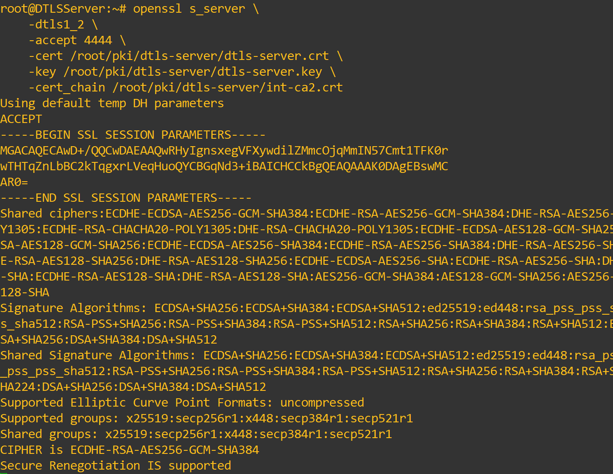
This is further confirmed by Figure 7, which shows the two certificates sent through the connection: the DTLS server certificate and the IntermediateCA2 certificate.
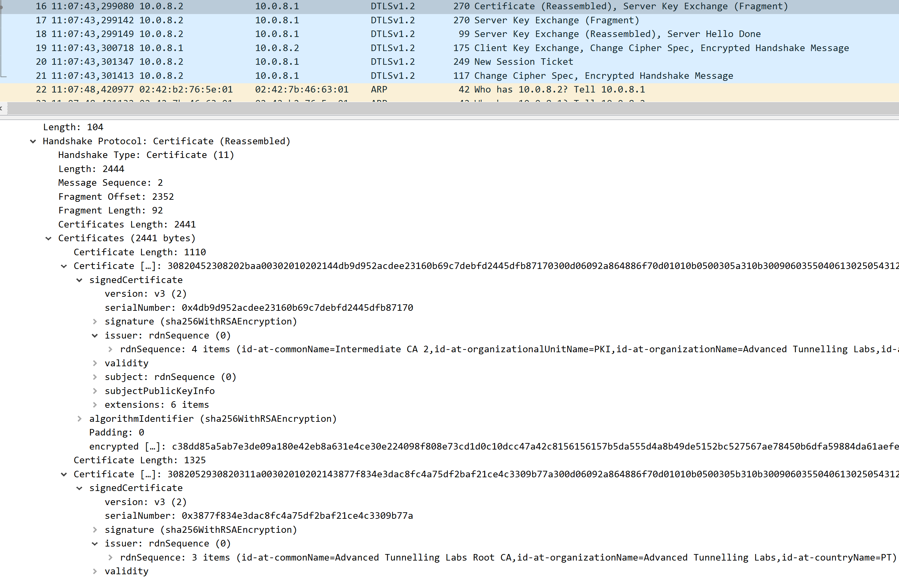
Let's now move forward and check how mutual authentication works and appears in DTLS.
First, use the following command on DTLSServer:
openssl s_server \
-dtls1_2 \
-accept 4444 \
-cert /root/pki/dtls-server/dtls-server.crt \
-key /root/pki/dtls-server/dtls-server.key \
-cert_chain /root/pki/dtls-server/int-ca2.crt \
-CAfile /root/pki/dtls-server/root-ca.crt \
-Verify 1 \
-verify_return_error
Then, use the following command on DTLSClient:
openssl s_client \
-dtls1_2 \
-connect 10.0.8.2:4444 \
-CAfile /root/pki/dtls-client/root-ca.crt \
-cert /root/pki/dtls-client/dtls-client.crt \
-key /root/pki/dtls-client/dtls-client.key \
-cert_chain /root/pki/dtls-client/int-ca2.crt \
-verify_return_error
We can see that the DTLS client side has no meaningful changes. It still validates the server's certificate chain and authenticates the server using its certificate.
The main difference lies on the server side and in what was captured by Wireshark. First, we can observe in Figure 8 that the client certificate and its chain are received by the server, which can then authenticate the client, completing the mutual-authentication process.
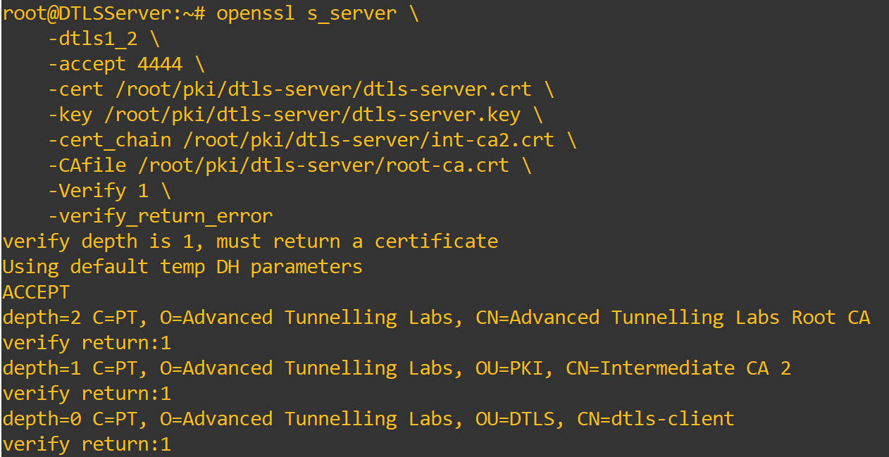
Second, we can see in Wireshark, in Figure 9, that with mutual authentication, not only is the server certificate sent, but the client's certificate is also sent for authentication.
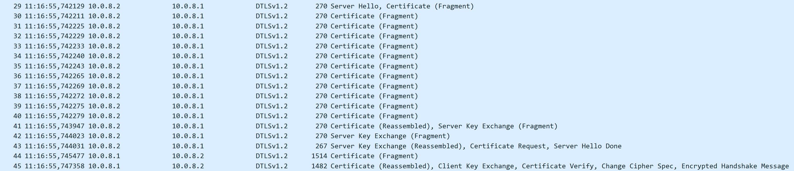
From these experiments, we can see that the differences between server-only and mutual authentication are not limited to the stronger authentication provided between the two peers. The handshake also changes because the server requests and validates a client certificate, both in TLS and DTLS.
Usage of Wrong or Invalid Certificates in Authentication
For our final experiment, we will use certificates and CAs that do not belong to the expected configuration to observe how authentication is affected, focusing on TLS.
For the first part, we will use the certificate from another device, in this case DTLSServer, as the certificate used by TLSClient and see how TLSServer responds.
To do this, copy the certificate from DTLSServer and paste it into TLSClient using:
With the wrong certificate in place, we will now attempt to connect to TLSServer using this certificate and observe its response.
First, start the server with:
openssl s_server \
-accept 4433 \
-cert /root/pki/tls-server/tls-server.crt \
-key /root/pki/tls-server/tls-server.key \
-cert_chain /root/pki/tls-server/int-ca1.crt \
-CAfile /root/pki/tls-server/root-ca.crt \
-Verify 1 \
-verify_return_error
Then, connect to it using the wrong certificate:
openssl s_client -connect 10.0.7.2:4433 -CAfile /root/pki/tls-client/root-ca.crt -cert /root/pki/tls-client/dtls-server.crt -key /root/pki/tls-client/tls-client.key -cert_chain /root/pki/tls-client/int-ca1.crt -verify_return_error
The first error we receive is caused by a mismatch between the certificate and the private key being used. This is expected because the certificate belongs to DTLSServer, while the private key belongs to TLSClient.
Let's copy the corresponding private key to TLSClient and see what happens next:
openssl s_client -connect 10.0.7.2:4433 -CAfile /root/pki/tls-client/root-ca.crt -cert /root/pki/tls-client/dtls-server.crt -key /root/pki/tls-client/dtls-server.key -cert_chain /root/pki/tls-client/int-ca1.crt -verify_return_error
With this configuration, we can see a more interesting error, shown in Figure 10. The handshake fails because the server cannot verify the issuer of the client certificate. The certificate belongs to the DTLSServer hierarchy and was issued by IntermediateCA2, while the server's configured trust store does not contain a valid chain leading from that certificate to its trusted Root CA through the expected intermediate.
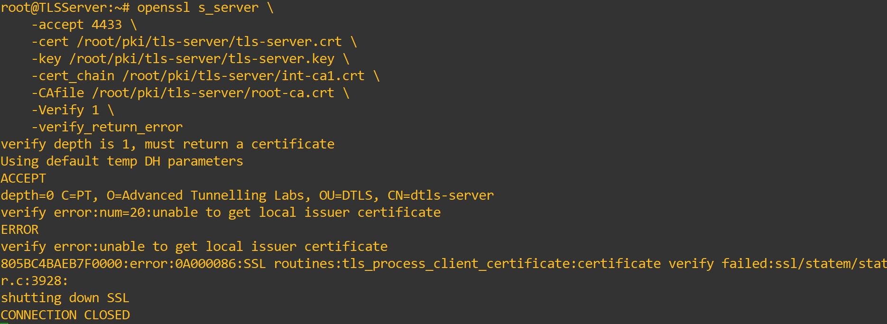
Now, let's see how using the wrong CA when attempting a connection also affects the handshake and authentication process.
To do this, copy the IntermediateCA2 certificate to TLSClient:
Then reconnect the client to the server using:
openssl s_client \
-connect 10.0.7.2:4433 \
-CAfile /root/pki/tls-client/int-ca2.crt \
-cert /root/pki/tls-client/tls-client.crt \
-key /root/pki/tls-client/tls-client.key \
-cert_chain /root/pki/tls-client/int-ca1.crt \
-verify_return_error
Since the client is now configured to trust IntermediateCA2 as its CA while the server's certificate chain was issued through IntermediateCA1, the client cannot validate the server certificate against its configured trust anchor. Although the error shown in Figure 11 is again unable to get local issuer certificate, it occurs for a different reason.
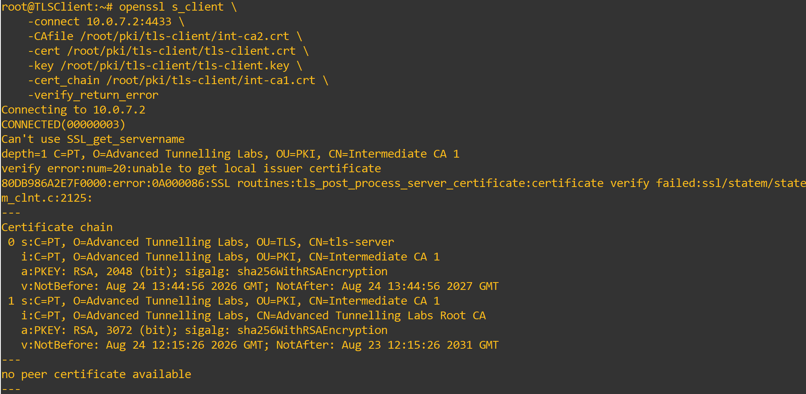
Instead of an incorrect certificate being sent to the server with a chain that does not belong to the expected PKI hierarchy, the client is now using the wrong trust configuration. The server's certificate chain is correctly associated with IntermediateCA1, but the client is configured to trust IntermediateCA2 instead, so it rejects the server certificate and closes the handshake.
With this, we conclude our PKI experiments. Through the configuration process and experiments, we have deepened our understanding of what a PKI is, the forms it can take, how its hierarchy and certificate chains work, how certificates are used for authentication, and how the PKI must be correctly configured and its certificates properly distributed. Otherwise, certificate validation can fail for any protocol that relies on the PKI.
We hope you have enjoyed the PKI laboratory and we hope to see you in our Post-Quantum Labs!